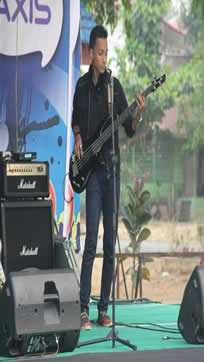

Hobbies
Hobbies saya adalah bermain Band dan bermain game online saya bermain band sejak kelas satu SMA dan sebanyak lima piala kami menangkan di tingkat pelajar.Tapi setelah kelas tiga SMA saya berhenti untuk bermain Band dan memilih hobby yang baru yaitu bermain game online.Meskipun masih belum ada prestasi yang di hasilkan tapi tetap saya suka hobby saya yang satu ini